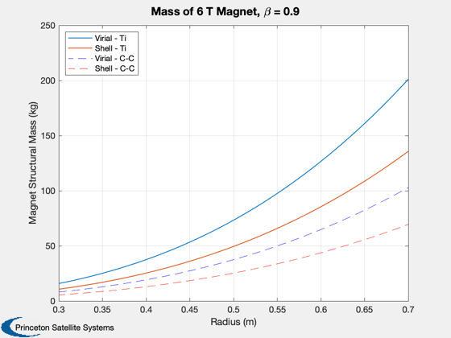

Magnet structural mass model comparison
Compare the magnet structural mass of a 6 T magnet using two models, the shell model (MagnetMass) and the Virial theorem (MagnetMassVirial). Also use two structural materials, titanium and carbon composite.
%-------------------------------------------------------------------------- % See also: MagnetMass, MagnetMassVirial %-------------------------------------------------------------------------- % References: % Schaffer, M.J., "Considerations for Steady-State FRC-Based Fusion Space % Propulsion", GA-A23579, General Atomics, December 2000. % Santarius, J.F. and B.G. Logan, "Generic Magnetic Fusion Rocket Model", % UWFDM-914, University of Wisconsin, February 1998. %-------------------------------------------------------------------------- %-------------------------------------------------------------------------- % Copyright (c) 2016 Princeton Satellite Systems, Inc % All rights reserved. %-------------------------------------------------------------------------- % Shell vs. Virial method - Titanium rhoM = 4300; % Titanium (kg/m3) sigmaM = 880e6; % Titanium (MPa) beta = 0.9; rM = linspace(0.3,0.7); bField = 6; % T mMshell = MagnetMass( rhoM, sigmaM, bField, rM, beta ); mMvirial = MagnetMassVirial( rhoM, sigmaM, bField, 4/3*pi*rM.^3 ); Plot2D( rM,[mMvirial;mMshell],'Radius (m)', 'Magnet Structural Mass (kg)', 'Mass of 6 T Magnet, \beta = 0.9') %axis([0.3 1 1 1000]) % Carbon-carbon composite - properties from Santarius rhoM = 2500; % Carbon fiber sigmaM = 1000e6; % MPa mMshell = MagnetMass( rhoM, sigmaM, 6, rM, beta ); mMvirial = MagnetMassVirial( rhoM, sigmaM, 6, 4/3*pi*rM.^3 ); hold on plot( rM,[mMvirial], 'b--' ) plot( rM,[mMshell], 'r--' ) legend('Virial - Ti','Shell - Ti','Virial - C-C','Shell - C-C','Location','northwest') %-------------------------------------- % PSS internal file version information %--------------------------------------